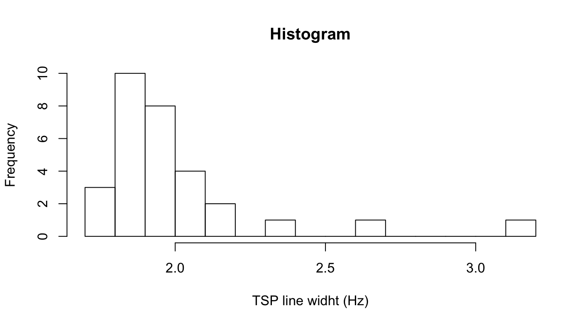
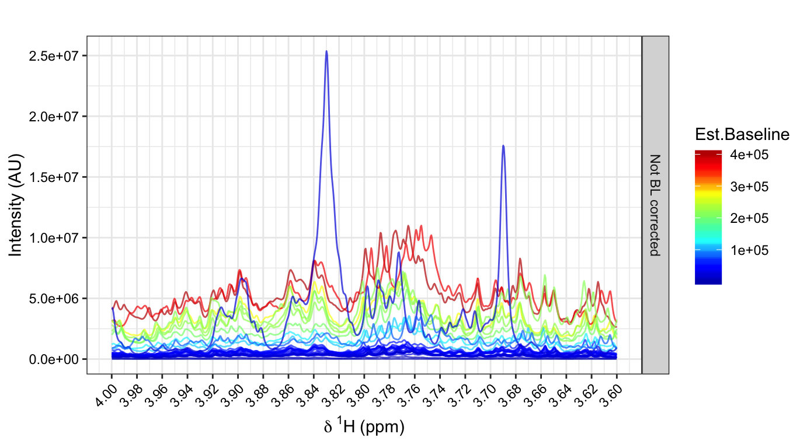
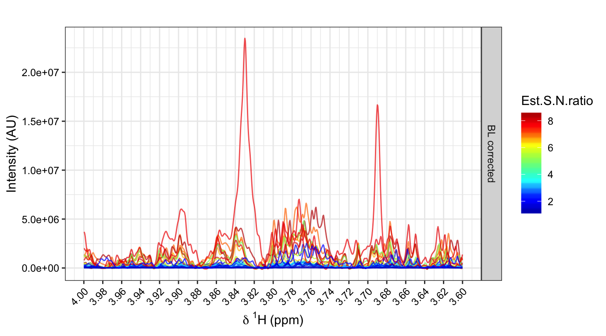
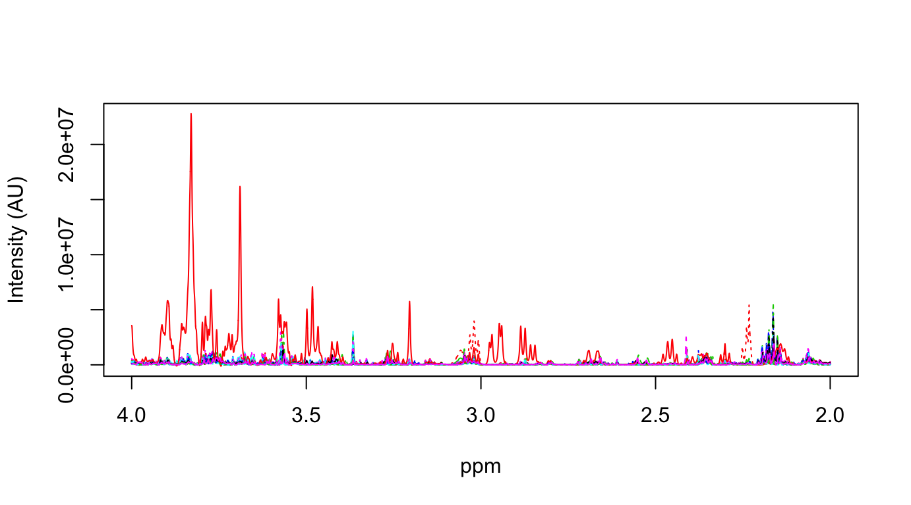
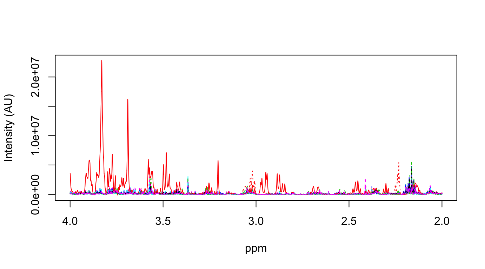

Data Import and Preprocessing
This vignette documents a typical pre-processing workflow for NMR-based metabolic profilig using the MetaboMate R package. Example data represent thirty Proton NMR (1H NMR) spectra of murine urine samples collected pre and post bariatric surgery. One dimensional spectra were acquired on a 600 MHz Bruker Avance III spectrometer, equipped with a 5 mm triple resonance (TXI) probe operating at 300 K. Further information on sample collection, processing and data acquisition can be obtained from the original publication by Jia V. Li et al.1
Prerequisites
Although not essential for this tutorial, I recommend to install RStudio. RStudio is an open-source integrated development environment for R, which includes a code editor that highlights syntax, enables quick and easy access to help pages, improves workspace management and offers various tools for plotting, history and debugging. Simply put, it makes working with R a lot more efficient.
Reading 1D NMR spectra
The first step is to load NMR spectra into the R workspace. This can be accomplished with the readBruker() function, whose only imput argument is the path to the NMR experiment folder. The function recursively searches for relevant NMR files in all subfolders and imports all spectra into matrix format, with rows representing spectra and columns metabolic features (ppm variables).
library(MetaboMate)
readBruker(path=system.file("extdata/", package = "MetaboMate"))
#> Reading 30 spectra.
ls()
#> [1] "an" "bariatric" "dilF.pqn" "dilF.ta" "distX"
#> [6] "idx" "idx.noiseDF" "idx.TSP" "idx.water" "meta"
#> [11] "opls.model" "outliers" "pca.model" "ppm" "spec.qc"
#> [16] "TSP.lw.Hz" "X" "X.bl" "X.cali" "X.pqn"
#> [21] "X.ta" "Y"This function automatically declares three variables to the R workspace:
- X = NMR data matrix
- ppm = ppm vector
- meta = spectrometer metadata
The rownames of X are the experiment folder names which can be used to match NMR spectra with metadata. The dataframe meta contains detailed information about acquisition and processing parameters for each spectrum, including acquistion date and run order, with rows representing specta, and each column repesents a different parameter. The column name prefix a or p indicates if the parameter was extracted from the acqus or procs file, respectively. For example, the column a_RG contains the receiver gain (RG) value for each spectrum, which was extracted from the experiment’s acqus file.
Plotting spectra
For the visualisation of NMR spectra there are two low-level plotting functions (spec() and matspec()), which allow plotting an individual spectrum or multiple spectra, respectively. Both of these functions are fairly fast. Let’s have a first look at all imported spectra over the entire ppm range with the matspec() function.
matspec(ppm, X, shift = range(ppm))
From this overview we can see that the spectral width ranges from -5 to approximately 15 ppm with the residual water signal resonating around 4.8 ppm.
There are different higher-level plotting functions available that allow a more comprehensive spectral visualisation of individual peaks or peak areas. One of this function is specOverlay(), which is comparable to matspec() shown above.
For illustration purposes we plot the TSP signal (a component of the sample preparation buffer) coloured according to the receiver gain (RG) parameter in meta dataframe, the linetype corresponds to the experiment type (EXP) defined with the spectrometer operation software.
# plot TSP signal
specOverlay(X, ppm, shift=c(-0.05,0.05),
an=list('Facet'='All spectra', # facetting (here: a single panel)
'Receiver Gain'=as.numeric(meta$a_RG), # colour scale
'Experiment'=factor(meta$a_EXP))) # linetype
The RG value amplifies the NMR signal (free induction decay) before it is converted to a digital signal. In the plot above you can see, that there were different types of experiments performed (indicated by different linetypes) and that the RG is related to the TSP signal strength within each experiment type. In metabolic phenotyping, the RG is often fixed for spectra acquired within one analytical run as it sometimes can be diffucult to account for.
Phasing and calibration
[Phasing script not available but work in progress.]
Spectral calibration is an essential step in NMR data processing, where the entire spectrum is shifted until the peak apex of a reference compound reaches a defined ppm position. For urine NMR analysis the reference compounds is usually TSP, which gives rise to a singlet defined at zero ppm.2
We can calibrate the urine spectra using the calibrate() function, as shown with the following code:
# calibrate urinary NMR spectra to TSP
X.cali=calibration(X, ppm, type='Urine')
# plot TSP overlay with calibrated data, facetted for each different experiment type
specOverlay(X.cali, ppm, shift=c(-0.05,0.05),
an=list('Experiment'=meta$a_EXP ,
'Run Order'=meta$a_RunOrder))
The plot above shows three panels, each for every experiment type and each spectra is coloured according to the run order. Now you can see that all TSP signals are nicely aligned with the peak apex centered at zero ppm (that was not the case before).
Both of the experiment types labelled <> and <OB_flowtest> (upper and lower panel in the above plot) are calibration experiments and were performed at the beginning of the run (as indicated by the colour). For quantitative analysis these are not suitable and therefore, we filter for the desired experiment type (<JL-noe1d>) before we continue with the analysis.
# Exclude calibration experiments
idx=grep('noe1d', meta$a_EXP)
X=X[idx,]
meta=meta[idx,]Assessment of spectral quality
In metabolic phenotyping and in any other field where multiple NMR spectra are compared quantitatively, the quality of spectra is of particular importance. Assessment of spectral quality usually is a visual inspection of the water suppresion quality, spectral line widths and baseline stability as well as the average signal to noise (SN) ratio.
High throughput NMR often does not allow a manual inspection of each individual spectrum and automatically generated quality indices are used to exclude low quality spectra. The spec.qc() function derives several spectral quality control indices and produces an overview plot if the function argument plot is set to TRUE:
# calculate quality control measures
spec.qc=spec.quality(X.cali, ppm, ppm.noise=c(9.4,9.5), plot=TRUE)
The output of this function is a dataframe containing the quality control indices for each sample:
- TSP line widht in ppm (related to the shim quality)
- Area of the residual water signal (quality of water suppression)
- Baseline area
- Average signal to noise ratio
The latter two paramters are primarily influenced by biological factors. For example, the area of the baseline depends on sample dilution (higher diluted samples have lower signals intensities, which leads to smaller baseline areas). However, these can still be useful for spotting extreme outliers of biological as well as technical nature.
The first few rows of the quality indices table are shown just below. Like for the NMR matrix X, the row names are the experiment folders.
| TSP.lw.ppm | Residual.water | Baseline | SN.ratio | |
|---|---|---|---|---|
| 1 | 0.00340 | 326192.6 | 18228.11 | 1.966967 |
| 10 | 0.00292 | 532977.1 | 27214.51 | 2.076296 |
| 101 | 0.00350 | 2738791.2 | 218445.59 | 6.554764 |
| 102 | 0.00364 | 2081086.1 | 272931.87 | 6.875540 |
| 103 | 0.00313 | 1255470.6 | 46483.65 | 3.092912 |
| 104 | 0.00324 | 5687148.5 | 402266.62 | 6.978859 |
Currently, the line width estimate of the spec.quality() function (TSP.lw.ppm) requires a TSP signal or any other external reference compound that resonates at zero ppm. The respective line width in Hertz can be derived by multiplying TSP.lw.ppm with the spectrometer frequency in the meta dataframe:
# TSP line widht in Hz
TSP.lw.Hz=spec.qc$"TSP.lw.ppm" * meta$"a_SFO1"
hist(TSP.lw.Hz, xlab='TSP line widht (Hz)', main='Histogram', breaks = "FD")
Excision of chemical shifts regions and baseline correction
Further downstream analysis requires the excision of chemical shift regions where signals from external sources (e.g. buffer) are present or are non-quantitative. In urinary NMR analyses these include the TSP and residual water signal as well as ppm regions where there is no signal but only noise.
The function get.idx() can be used to obtain indices of the desired shift range from the ppm vector. These indices can then be further used to exclude the relevant columns in the NMR matrix and ppm vector. This is illustrated in the following code snippet.
# Indexing TSP region and upfield noise...
idx.TSP=get.idx(range=c(min(ppm), 0.5), ppm)
# ... water region...
idx.water=get.idx(range=c(4.6, 5), ppm)
# ... as well as downfield noise regions
idx.noiseDF=get.idx(range=c(9.5, max(ppm)), ppm)
# Exision of TSP, res. water and noise regions
X.cali=X.cali[,-c(idx.TSP, idx.water, idx.noiseDF)]
ppm=ppm[-c(idx.TSP, idx.water, idx.noiseDF)]Baseline correction can be performed with the function bline(). See ?bline for further methodological information.
# Baseline correction
X.bl=bline(X.cali)
# compare spectra before and after baseline correction
specOverlay(X.cali, ppm, shift=c(3.6,4),
an=list(panel='Not BL corrected',
'Est Baseline'=spec.qc$Baseline))
specOverlay(X.bl, ppm, shift=c(3.6,4),
an=list(panel='BL corrected' ,
'Est S.N ratio'=spec.qc$SN.ratio))
Spectral normalisation
Depending on the sample type, multivariate analysis requires normalisation of spectra. In urinary NMR studies for example, the sample dilution varies across samples, perhaps due to the uptake of different amounts of water.
There are several normalisation methods avaiable. Among the most commonly applied ones are Total Area (TA) normalisaton and Probablistic Quotient Normalisation (PQN).3 In this tutorial, we normalise the spectra using both methods and compare the results. Therefore the functions pqn() and totaArea() are called, returning the normalised NMR matrix. The additional input argument add.DilF indicates if the calculated dilution factor should be exported as a variable. If that is the case, then the argument should specify a variable name, otherwise the argument should be set to NULL.
X.pqn=pqn(X.bl, add.DilF = 'dilF.pqn')
X.ta=totalArea(X.bl, add.DilF='dilF.ta')
plot(log10(dilF.pqn), log10(dilF.ta), xlab='PQN Dilution Factor', ylab='Total Area (scaled)')
abline(a = c(0,1), col='red')
Plotting the dilution factors of both normalisation factors against each other, shows that these are genearlly lower for PQN than for TA normalisation. Which normalisation method is more appropriate generally depends on the sample type, experimental setup and analysis platform. In NMR-based untargeted metabolic phenotyping studies using urine as a sample matrix I recommend using PQN instead of TA normalisation.
The last step is a final visual inspection of the pre-processed NMR spectra:
matspec(ppm, X.pqn, shift = range(ppm))
matspec(ppm, X.pqn, shift = c(2,4))
matspec(ppm, X.pqn, shift = c(4,6))
matspec(ppm, X.pqn, shift = c(6,9)) 


Summary and further steps
The pre-processed spectra are calibrated, free of unwanted signals or noise regions and normalised to account for dilution effects. Low quality spectra could be further excluded based on the quality control indices dervied with the spec.quality() function.
The next step is a multivariate statistical analysis with projection methods such as Prinicpal Component Analysis (PCA) and Partial-Least Squares (PLS) or extensions of it (Orthogonal-Partial Least Squares). For more information please see vignette Multivariate Statistical Analysis of the MetaboMate package.
Li, Jia V., et al. (2011) Metabolic surgery profoundly influences gut microbial-host metabolic cross-talk. Gut 60.9, 1214-1223.↩
Dona, A.C., et al. (2014) Precision high-throughput proton NMR spectroscopy of human urine, serum, and plasma for large-scale metabolic phenotyping. Analytical Chemistry. 86.19. 9887-94.↩
Dieterly, F., (2006), Probabilistic Quotient Normalization as Robust Method to Account for Dilution of Complex Biological Mixtures. Application in 1H NMR Metabonomics, , 78.3, 4281-90↩